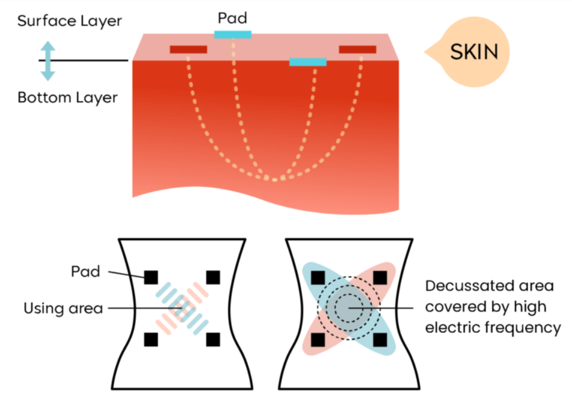

What is IFC?
An explanation of the physiological mechanisms, wave interference patterns, and clinical applications of Interferential Current (IFC) therapy for managing deep tissue pain.
Clinical Context
Interferential Current (IFC) therapy penetrates deep into tissues to relieve pain, reduce swelling, and promote muscle relaxation for localized tissue healing. While the physiological effects are not well established enough to explain the analgesic effect, it is reported that IFC therapy decreases stimulation of sensory nerves near the electrodes while increasing the effect on deep tissues. Gate control theory, descending pain suppression pathway, and placebo effect are also theories that have been proposed.
How it works: Interference Pattern
IFC works through a quadripolar configuration. The clinician places four electrodes on the skin so that their paths cross diagonally over the target pain site. One of the channels delivers a fixed frequency, while the other channel delivers a varied frequency to physically intersect deep within the tissue. Their interaction creates a new, low-frequency localized signal known as the amplitude-modulated beat frequency.
